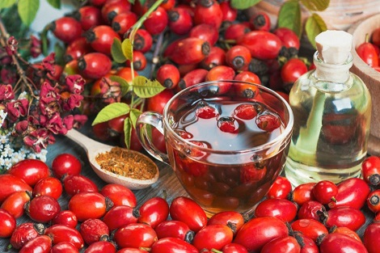

|  | Pestil çeşitleriKuşburnu MarmelatıKumsal Organik ürünleri sizlere en doğal malzemelerden organik ürünler sunmaktadır. Bu ürünler kalp hastalıklarına, ritim bozukluğuna ,tansiyona ve şekere iyi gelmektedir |
| Kalp bozuklugu | Şeker dengesi | |
Tansiyon dengesi | Kan dengesi |
| Şeker | Su |
|---|---|
| %40 sugar | %60 water |
|
|